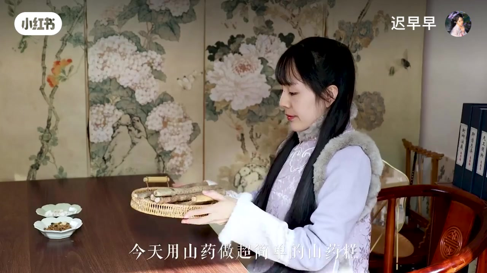
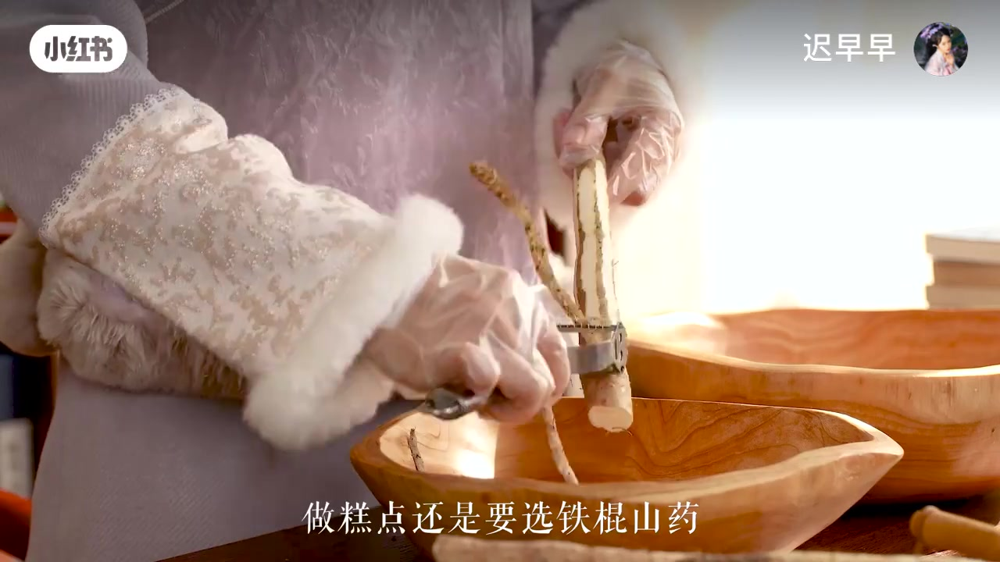
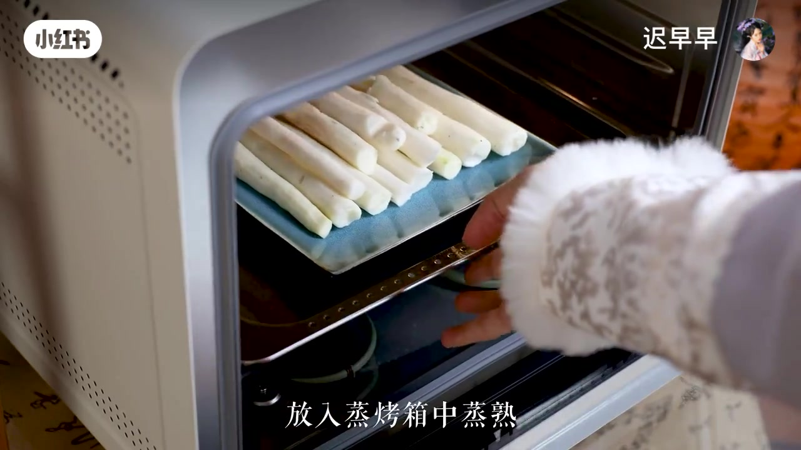
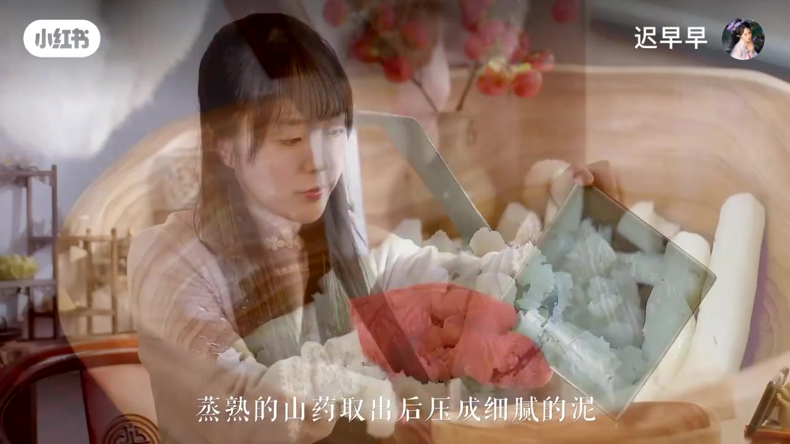
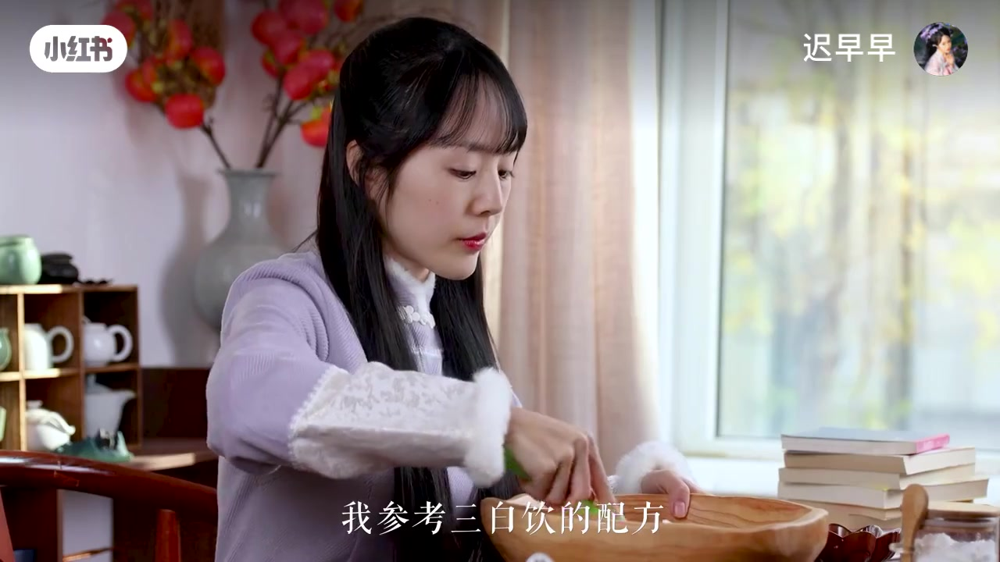
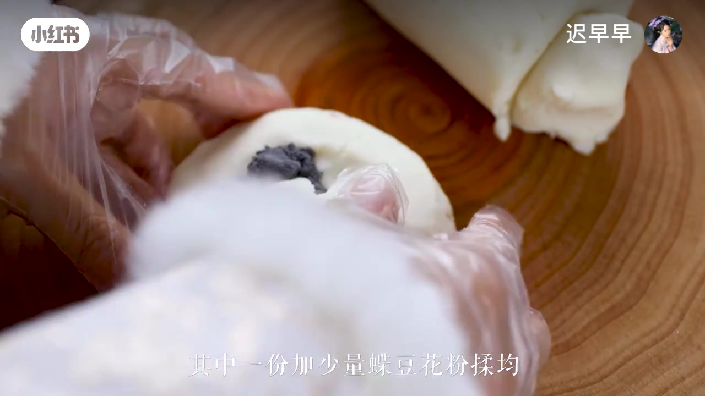
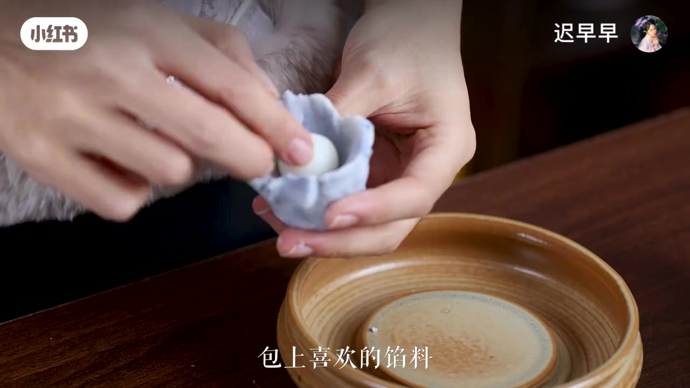
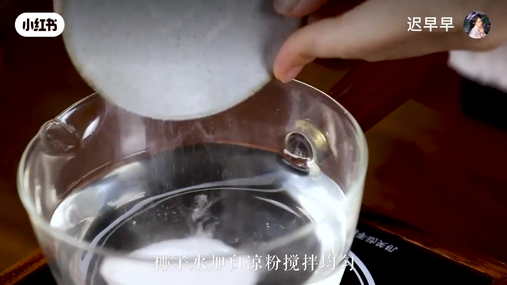
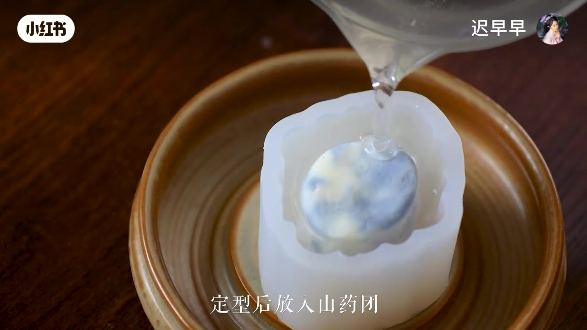

青花瓷山藥糕
選鐵棍山藥、蒸熟壓泥、染成藍白雲紋，再包一層透明凍。看圖就能做。
免烤箱
冷藏就成型
記得戴手套

動手前先記住
01
刀子請小心削皮時手指遠離刀刃。不熟就請老師幫忙。
02
熱的會燙蒸箱、煮沸的椰子水和模具都燙手，戴隔熱手套。
03
建議戴手套山藥黏手，也可能讓皮膚癢，揉團時請戴手套。
04
白涼粉要煮沸不煮開就不會好好凝固。粉要完全化開再倒模。
先把材料排好

- 鐵棍山藥320 g口感更粉糯
- 熟糯米粉25 g讓它能搓成團
- 白砂糖25 g甜度剛剛好
- 蝶豆花粉適量染出青花藍
透明外衣：椰子水 + 白涼粉，大約 10 : 1。例如 150 毫升椰子水配 15 克白涼粉。可包喜歡的餡，也可以不包，直接搓球。

1
選鐵棍山藥，削皮
做糕點要選鐵棍山藥，口感更好。戴手套削皮，黏液比較不會弄到手。

2
放進蒸烤箱蒸熟
去皮後切段或切小塊，放入蒸烤箱，蒸到筷子能輕易插入。熱熱的更好壓泥。

3
趁熱壓成細泥
蒸熟取出，用壓泥器壓到細細滑滑、沒有顆粒。越細，成品越像瓷器。

4
加粉揉成團
加入熟糯米粉 25g、白砂糖 25g，揉到不黏手的光滑麵團。

5
一份加蝶豆花粉
麵團分成兩份。其中一份加少量蝶豆花粉，揉成漂亮的藍色。粉少少加，顏色才清透。

6
雙色混合，可包餡
藍白兩色輕輕捏在一起，不要揉太勻，才有雲紋。可包喜歡的餡，再搓成圓球。

7
椰子水加白涼粉
椰子水加白涼粉攪勻，煮沸。比例大約 10：1，例如 150 毫升椰子水配 15 克白涼粉。

8
倒模 → 放山藥團 → 再倒滿
先倒一層進模具，稍稍定型後放入山藥團，再倒滿。冷藏定型，脫模就完成了！
完成！可以吃的小青花瓷
成功密技
藍白不要揉太開，紋路才像青花。
外衣要等底部稍凝，球才不會沉到底。
脫模前再冷藏一下，花紋更清楚。
畫面來自原影片截圖 · 白涼粉記得煮沸、模具記得冷藏